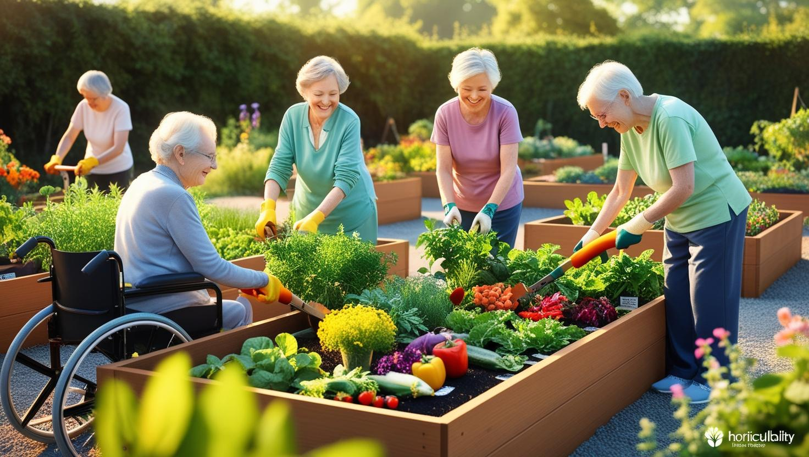

園藝治療區 (Horticultural Therapy Garden - YouTube 播放)
正在載入園藝治療區 YouTube 音樂...

「園藝治療區」是記憶花園裡一片充滿陽光、綠意與生命力的療癒空間。我們相信，透過親手接觸土壤、種植花草蔬果，長輩們不僅能活動筋骨，更能從大自然的循環中獲得平靜、喜悅與成就感。
這個區域經過無障礙設計，讓行動不便的長輩也能輕鬆參與。在專業園藝治療師或志工的引導下，長輩們可以體驗從播種、澆灌、施肥到收成的完整過程。
特色與效益
- 促進肢體活動：翻土、播種、澆水等動作有助於維持長輩的肌力與關節靈活度。
- 感官刺激：植物的色彩、香氣、觸感以及泥土的氣息，能提供豐富的感官體驗。
- 提升專注力與認知功能：記憶植物名稱、種植步驟、觀察生長等有助於活化大腦。
- 情緒療癒與壓力釋放：與大自然連結能帶來平靜感，減輕焦慮與憂鬱。
- 增強成就感與自我價值：看著親手種植的植物成長茁壯，甚至收成食用，能帶來莫大的喜悅。
- 促進社交互動：共同參與園藝活動能增加長輩間的交流與合作。
空間佈置與設施
我們為長輩打造了一個安全、友善且充滿生機的園藝環境：
- **高架花床：**設計了不同高度的高架花床，方便站立或乘坐輪椅的長輩操作，無需長時間彎腰。
- **無障礙步道：**園區內鋪設平坦防滑的無障礙步道，方便輪椅和助行器通行。
- **易握工具：**提供握柄加粗、輕量化的園藝工具，適合抓握力較弱的長輩使用。
- **灌溉系統：**設置方便使用的灑水器或滴灌系統，減輕澆水負擔。
- **休憩與遮陽：**園區內設有舒適的座椅和遮陽設施，供長輩在活動間隙休息。
- **植物選擇：**種植易於照料、生長快速、具觀賞性或實用性的植物，如香草（薄荷、迷迭香）、觀賞花卉（日日春、非洲鳳仙）、簡易蔬果（小番茄、生菜）。
在這裡舉辦的活動
- 季節性種植計畫：根據季節變化，引導長輩種植不同的花草蔬果。
- 香草採集與應用：採集種植的香草，製作香包、泡花草茶等。
- 蔬果收成分享會：將收成的蔬果共同烹飪或分享給社區。
- 植物手作DIY：例如押花、組合盆栽、植物染等。
- 園藝知識小學堂：分享基礎的植物照護知識與趣聞。